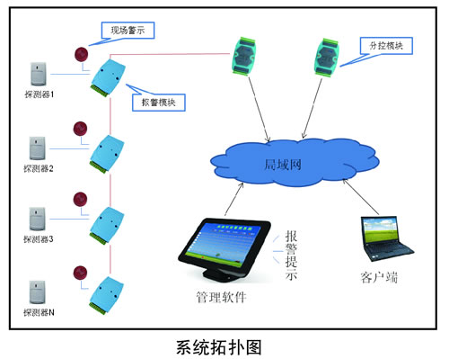

安防工程解决方案
近几年来，羁押场所上吊自杀等非正常死亡事件时有发生，引起了广泛、持续的社会关注和讨论，这些非正常死亡事件不仅影响到受害人及其家庭，更严重影响了司法权威和政府形象。
现看守所内监室一道门多为双层监室门，因使用需要，部分门型内层门为栅栏门扇，监室门洞旁有栅栏窗，这些栅栏结构虽然增强了监室安全系数，但另一方面，也引入了新的风险 --- 栅栏容易被极少数人员利用，从而形成自杀等重大安全事故隐患，在押人员情绪波动时往往会利用夜间或者独处时间做一些极端事情，比如企图破坏门窗逃跑，利用栅栏结构上吊自杀等。而监控系统和干警巡视并不能及时发现这类事故的发生，其它一些报警装置并不能区分在押人员的这些异常行为，为防止这种重大安全事故的发生，需要一种有效可靠的防御报警系统，能够主动发现异常情况并及时报警，起到杜绝该类事故的发生。
监室安全警戒系统由前端探测器、报警模块、管理主机及报警管理软件等组成。

值班室安装一套报警管理软件，负责接收处理各个监室的报警信息并记录存储，可在软件上设置各种参数，进行布撤防，解除报警等操作。在押人员如需正常进入监室、放风场等，可由管教人员在监控室内对系统进行撤防，待时间过后再进行布防，或者利用系统的定时布撤防功能。
◆ 界面清晰、直观，能一目了然清楚发生警情的具体位置
◆ 具有单独、整体布撤防功能，操作简便
◆ 可设定多组定时、定点布撤防，无需频繁布撤防操作
◆ 具有自检功能，出现通迅故障等异常情况后会提示报警
◆ 设置灵活、简便、操作简单
◆ 具有语言警示功能
2015 © 河南祯祥智能工程有限公司. ALL Rights Reserved.